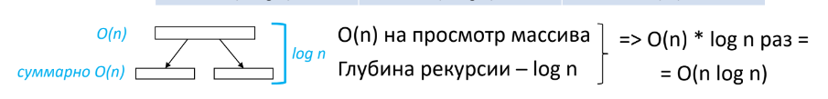
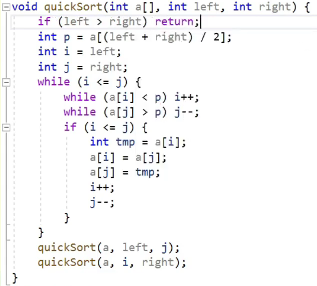
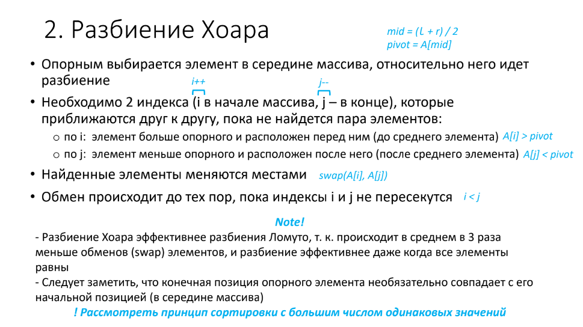
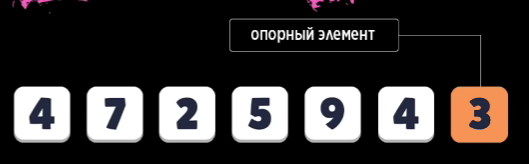
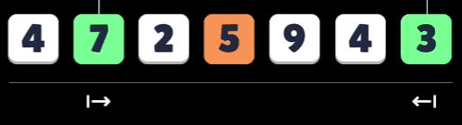
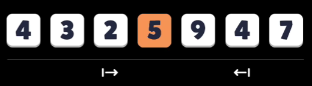
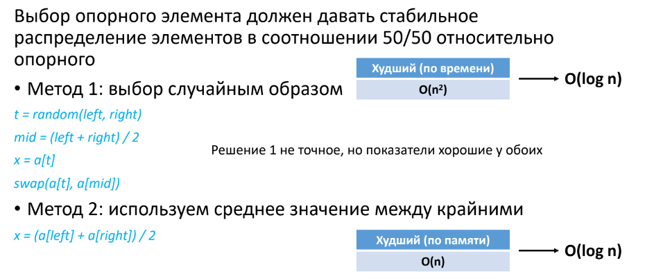
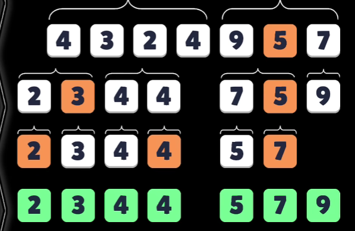
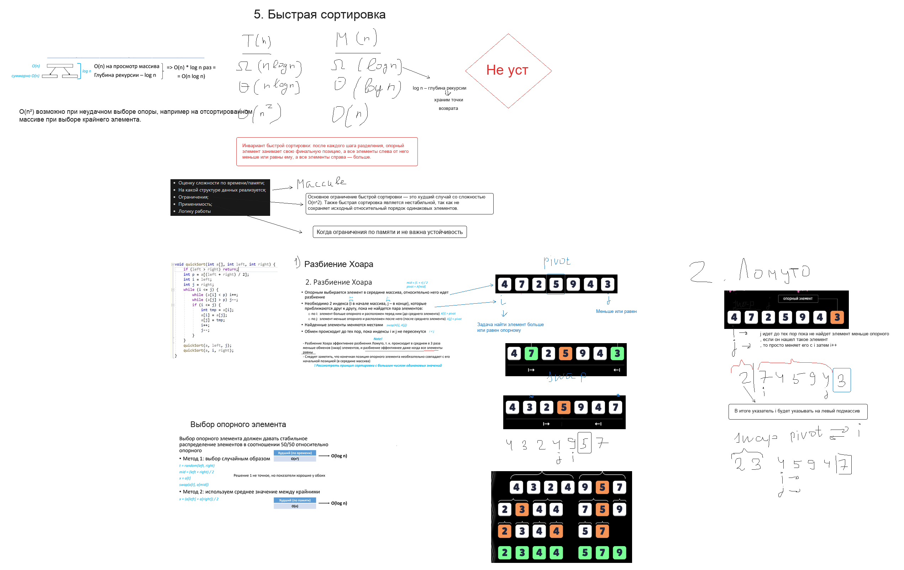
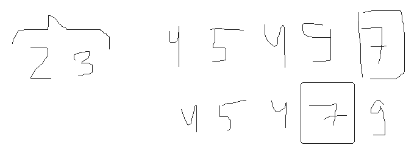

5. Быстрая сортировка
Теория, примеры и иллюстрации по теме.
Материалы и примеры по пунктам
Быстрая сортировка

Устойчивость метода
При сбалансированном разбиении глубина рекурсии O(log n), в худшем случае O(n). Стек хранит адреса возврата и состояние активных вызовов.
O(n²) возможно при неудачном выборе опоры, например на отсортированном массиве при выборе крайнего элемента.
В варианте Ломуто после разбиения опорный элемент оказывается на окончательной позиции. Элементы слева не превышают опору, элементы справа больше неё. Разбиение Хоара возвращает границу частей.
Основное ограничение быстрой сортировки — это худший случай со сложностью O(n^2). Также быстрая сортировка является нестабильной, так как не сохраняет исходный относительный порядок одинаковых элементов.
Быстрая сортировка удобна, когда важна сортировка на месте и порядок равных ключей несущественен. Стек рекурсии требует отдельной памяти.
Разбиение Хоара



В схеме Хоара левый индекс ищет элемент не меньше опорного, а правый — элемент не больше опорного. Если индексы не пересеклись, найденные элементы меняют местами.


После пересечения индексов граница разделяет две части, которые сортируются рекурсивно.
Выбор опорного элемента


Схемы и рукописные примеры

